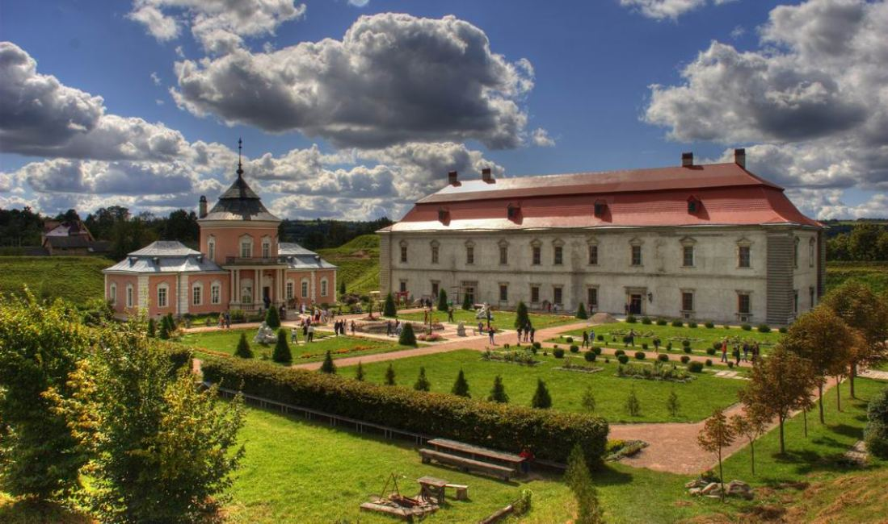

Замок є зразком оборонної споруди неоголландського типу і належить до пам'яток типу «palazzo in fortezzo» (палац у фортеці), тобто поєднує функції оборони та житла.
Оборонні споруди Золочівського замку — це вали, бастіони, надбрамна вежа, міст і равелін. З часів заснування збереглися вали, бастіони, частково надбрамний корпус, а равелін і міст — реконструкція.
У замковому дворі збереглися донині лише Китайський палац, Великий житловий палац і значно перебудована у кінці XIX століття надбрамна вежа.
В'їзна вежа, Китайський палац, Великий житловий палац творять ренесансний ансамбль.
На кожному розі замку добре видно п‘ятикутні бастіони, що закінчуються сторожовими вежами, прикрашеними плитами з гербами Яніна, Годзава, Равич і Гербурт та літерами J.S.K.K.S.K. (Jakob Sobieski, Krajczy Koronny, Starosta Krasnostawski). Крім того, на баштах є цифри “1634”. Після перебудови в 19 ст. бастіони мають лише декоративний вигляд.
Турки та татари неодноразово намагалися взяти штурмом Золочівську фортецю – й щоразу безуспішно. Тільки в 1672 році їм це вдалося зробити. Неприступну твердиню було захоплено та зруйновано після шестиденної облоги турецької армії на чолі з пашею Капуданом.
Опис будівлі 1687 року:«Мала цитадель чотирьохстінна, обнесена кам’яними мурами і сильно укріпленими валами з кутовими бійницями для гармат. Зі сторони полів тягнеться рівнина, на якій знаходяться польові фортифікаційні споруди для регулярного війська. Брама цитаделі зі сторони міста також захищена вартою".